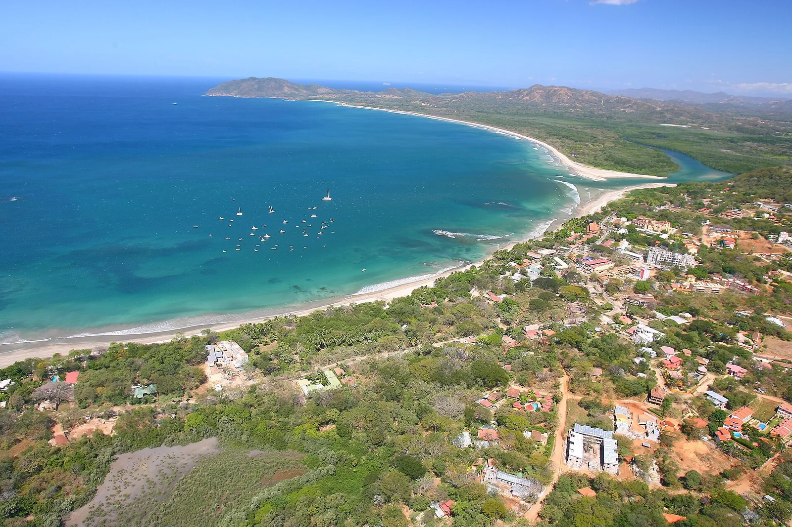

Playa Grande
Guanacaste, Costa Rica · surf

Une plage de surf du Guanacaste, au nord de Tamarindo. Un arrêt sur la péninsule de Nicoya.
- Lieu
- Guanacaste, Costa Rica
- Niveau
- Variable selon les conditions
- Activités
- surf
- Type d'eau
- Mer / océan
- Coordonnées
- 10.33, -85.85 (position approximative du secteur)
Ouvrir dans Ocean Buddy Télécharger sur l'App Store
Source : Visit Costa Rica.